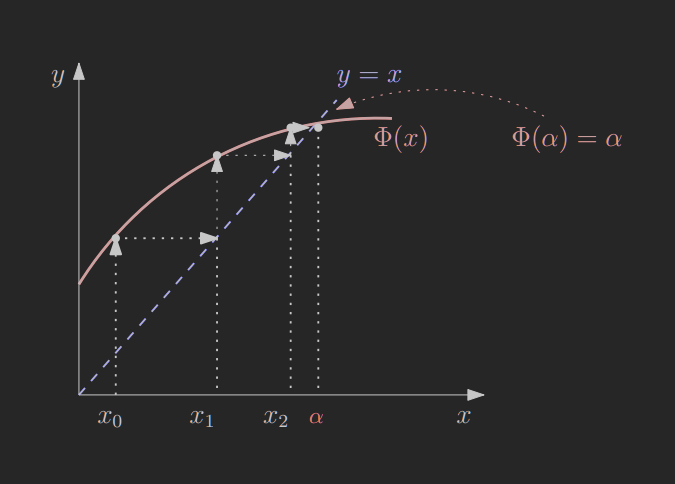
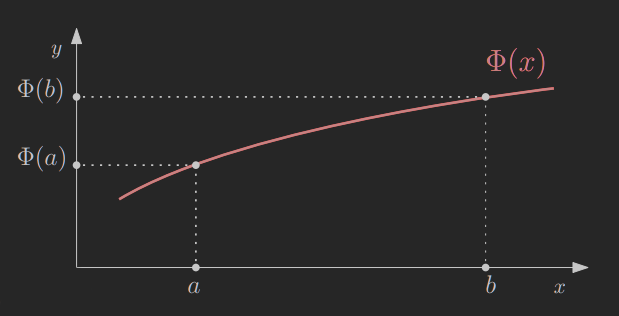

Będziemy rozpatrywać metody iteracyjne postaci: xn+1:=Φ(xn)(n≥0) gdzie Φ jest funkcją R→R, a x0 jest początkowym rozwiązaniem.
2. Przykład
W metodzie Newtona, dla zadania f(x)=0, Φ ma następującą postać: Φ(x)=x−f′(x)f(x)
3. Punkty stały
Oczywiście xn+1:=Φ(xn) może generować ciągi rozbieżne. Załóżmy, że limn→∞xn istnieje i jest skończona, mianowicie n→∞limxn=α
Jeśli Φ jest ciągła, to: Φ(α)=Φ(n→∞limxn)=n→∞limΦ(xn)=n→∞limxn+1=α
Zatem Φ(α)=α
Punkt α nazywamy punktem stałym funkcji Φ.

4. Zbieżność, rozbieżność — przypadek ekstremalny
Niech f(x)=3x. Zastosujemy metodę Newtona dla f(x)=0, f(0)=0.
Zatem Φ(x)=x−31x−323x=−2x
Punktem stałym (jedynym) metody Φ jest α=0. Metoda Φ jest zbieżna do α dla x0=0. Dla x0=0 jest rozbieżna:
5. DEF: Odwzorowanie zwężające
Kiedy Φ jest zbieżna?
Niech Φ:D→D odwzorowuje pewien zbiór domknięty D⊂R w siebie. Funkcja Φ jest odwzorowaniem zwężającym, jeśli istnieje liczba λ∈[0;1) taka, że ∣Φ(x)−Φ(y)∣≤λ∣x−y∣ dla dowolnych x,y∈D.

5.1. Twierdzenie o kontrakcji
Niech D⊂R będzie podzbiorem domkniętym. Jeśli Φ:D→D jest odwzorowaniem zwężającym zbioru D w siebie, to Φ ma jedyny punkt stały α. Ponadto α jest granicą każdego ciągu otrzymanego za pomocą xn+1:=Φ(xn) z punktu początkowego x0∈D.
Stąd λ=21, D jest dowolnie szeroki oraz Φ jest odwzorowaniem zwężającym. Φ(α)=α⟹α2 (punkty stały).
6. Zbieżność
6.1. Twierdzenie#1
Przypuśćmy, że równanie x=Φ(x) ma pierwiastek α, tj. α=Φ(α), α jest punktem stałym. Niech w przedziale I={x:∣x−α∣≤Γ} istnieje pochodna Φ′(x) taka, że ∣Φ′(x)∣≤ρ<1.
Wówczas dla każdego x0∈I: 1. xn∈I,n≥1 2. limn→∞xn=αn 3. α jest jedynym punktem stałym odwzorowania Φ w I.
6.1.1. D-d
Z twierdzenia o wartości średniej i o kontrakcji∣Φ(x)−Φ(y)∣=∣Φ′(ξx)∣∣x−y∣≤ρ∣x−y∣ dla dowolnych x,y∈I, gdzie ρ=λ<1.
Rozważmy metodę Newtona dla f(x)=0, gdzie f(x)=xp,p>1(r=0 jest pierwiastkiem wielokrotnym).
Zatem Φ(x)=x−f′(x)f(x)=x−pxp−1xp=pp−1x
Oczywiście ∣Φ′(x)∣=pp−1≤ρ<1 dla dowolnego x∈R. Stąd α=0 jest jedynym stałym Φ. Ponadto limn→∞xn=α, punkt początkowy x0 jest dowolny.
Jaki jest wykładnik zbieżności metody xn+1=pp−1xn? ∣xn+1−α∣=pp−1∣xn∣=pp−1∣xn−α∣=C∣xn−α∣γ gdzie C=pp−1∈(0;1) i wykładnik zbieżności γ=1. Stąd metoda jest zbieżna liniowo.
Należy zauważyć, że metoda Newtona jest zbieżna kwadratowo (γ=2) jeśli f′(r)=0.
6.4. Przykład
Rozważmy równanie x+lnx=0. Zastosujemy tutaj metodę xn+1:=e−xn, Φ(x)=e−x, do wyznaczania jego pierwiastków r.
Sprawdźmy, czy rzeczywiście można zastosować tę metodę, tj. czy jednym z punktów stałych jest r. Φ(α),e−α=α,−α=lnα,α+lnα=0
Zatem punkty stale Φ pokrywają się z pierwiastkami równania. Sprawdźmy warunek dostateczny zbieżności: ∣Φ′(x)∣=∣∣∣−e−x∣∣∣<1 dla x>0.
Zatem dla każdego x0>0 metoda zbiega do jedynego punktu stałego α (pierwiastka r).
6.5. Twierdzenie#2
Niech p-ta pochodna Φ(p)(x) funkcji iteracyjnej Φ(x) będzie ciągłą w pewnym otoczeniu α. Metoda xn+1:=Φ(xn) jest zbieżna do α i jest rzędu p wtedy i tylko wtedy, gdy Φ(α)=α,Φ(j)(α)=0j=1,…,(p−1),Φ(p)(α)=0
Ponadto stała zbieżności C=p!Φ(p)(α) (dla p=1,Φ(p)(α)=0, C musi być takie, że C∈[0;1)).
6.5.1. D-d (szkic)
Rozwińmy funkcję Φ(xn+1:=Φ(xn)) w szereg Taylora wokół punktu α: Φ(x)=Φ(α)+Φ(1)(α)(x−α)+⋯++(p−1)!Φ(p−1)(α)(x−α)p−1+p!Φ(p)(ξ)(x−α)p, gdzie ξ leży między x i α. Połóżmy x=xn. Zatem Φ(xn)=Φ(α)+Φ(1)(α)(xn−a)+⋯++(p−1)!Φ(p−1)(α)(xn−α)p−1+p!Φ(p)(ξ)(xn−α)p.
„⇐”:
Z założenia (xn+1:=Φ(xn),Φ(α),Φ(j)(α)=0,Φ(p)(α)=0) dostajemy: en+1=xn+1−α=p!Φ(p)(ξ)(x−α)p=p!Φ(p)(ξ)enp≈p!Φ(p)(α)enp=C⋅enp.